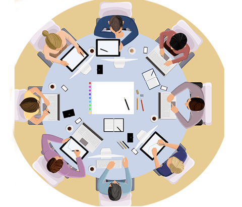

This website shows the great ideas, big plans, and big measures that led the party Central Committee with Comrade Xi Jinping as the core in the past five years to lead the people to not forget their initial intentions, overcome difficulties, and continuously promote comprehensive and deepening reforms. It fully demonstrates that the Party Central Committee has been moving forward and dreaming. Courage, responsibility and wisdom.

3 Meeting
reform measures

2 Meeting
Related fields

Sociology
contradiction
masses
Strong questions
Difficult to attack
The five years since the first session of the Twelfth National People's Congress have been extraordinary in the course of China's development. In the face of extremely complicated domestic and foreign situations, the Party Central Committee, with Comrade Xi Jinping as its core, united and led the people of all ethnic groups throughout the country to move forward, comprehensively pushed forward the overall layout of the "five-in-one", coordinated and promoted the "four-all" strategic layout, reform and opening up, social initiative, and a comprehensive and innovative situation in the modernization drive.

Report interpretation
In 2016, the whole province took the initiative to adapt to the new normal, made great efforts to push forward the structural reform on the supply side, properly coped with multiple challenges, consolidated the foundation for stable and stable economic operation, intensified reform and efficiency, accelerated the pace of structural adjustment, advanced major strategies in depth, and actively improved the well-being of the people's livelihood during the 13th Five-Year Plan.

Hard to attack
Victory is the key to reform." Every step forward in China relies on the courage and courage of the government departments to push forward the reform of "detention uniform" with the courage of breaking the wrists of strong men; to restructure the military reform target system, to solve the problems above the "neck" boldly;

1
2
3